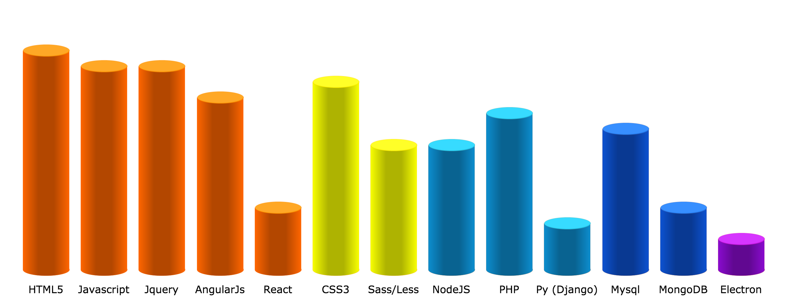

Srihari Naidu Pudu @sriharinaidu | QA Analyst
Gurgaon, India
linkedin.com/krishcdbry
github.com/krishcdbry
facebook.com/krishcdbry
facebook.com/krishcdbry
24 yrs
11+ Sites
3+ Exp
Summary
- Around 3 years of professional experience writing JavaScript, Jquery, AngularJS and around 1.5 years writing php, python. Recently digging into ReactJS(JSX), Angular2 (Typescript).
- Developed & launched a social network at the age of 19 :) . Around 5 years of personal experience in full stack development, Including deploying, hosting websites end to end. Hosted around 11 sites - 9 LAMP stack (3 AWS) , 1 Mean Stack (AWS) , 1 Django (AWS) sites.
- Solid understanding of Browser components, process & Rendering engine .
- Experience coding against RESTful APIs. Wrote API’s with NodeJs, Php, Python (Django). In Love with ES6
Experience
Misport (PitchVision), Gurgaon — Frontend Lead Developer
2014 Oct - Present
- Developed scalable frontend stack from scratch.
- Responsible for frontend development, management , tracking and maintaining various products on the website.
- Developed PV-Review - Includes (PV-splitter, PV-Canvas). Which can show analysis of more than 1 Million deliveries using pv canvas UI for plotting. Made the canvas responsive and interactive, User can click on the plotted delivery to get the delivery information.
- Developed PV-Tv - Includes (PV-Audio, PV-Video, Image, Doc) - An Interactive, Flexible media player with additional speed controls, playlist. Built on HTML5 Video player. Currently dealing with millions of videos using PV-Playlist.
- Written reusable code and build many more interesting features like Workload Tool (Graphical analysis of bowler stats) , PvNotes (Interactive widget with 4 GUI's can be trackable, smooth flow from any session), Public Pages (Similar to facebook pages), Timeline (Filter by player) , Newsfeed (Public, Trending, Personal) etc.
- Working with the UI/UX team and bridging the gap between graphic design and technical implementation, Interacting with API team frequently for making the integration perfect
- Managing a team of frontend developers which includes code reviews, meetings.
- Also responsible for taking the technical interviews for hiring the frontend developers.
- Worked on Internshala's main portal. Mainly dealing with PHP, Doctrine(DQL), AWS and some core full stack modules.
- Extended & Improved student profile module.
Skills
db UI Dev
db UI Design
db Backend Dev
db Database Dev db Desktop sw
db Database Dev db Desktop sw

Personal Projects
Heartynote
Heartynote is a social networking platform works like an online memorable diary , which connects people with their memories & friends lifelong. Introduced On this day concept in 2013 before Facebook has introduced it.
Javascript
Jquery
Angular
LAMP Stack
HTML 5
CSS3
heartynote.com
Guess kitty JS
Guess kitty is a simple game with reactjs, Where player need to guess the block in which kitty presents and score depends on the attempts he used to find the kitty.
Javascript
ReactJS
HTML 5
CSS3
guess-kitty.thenodejs.com
Zangura
Prototype - A structured local shopping site where people can find the reviews of apparel , ratings, content and items sold in a particular shop/market & many more features like maps, feed, profile etc.
Javascript
Angular
LAMP Stack
AWS
Codeignter
Bootstrap
zangura.thenodejs.com
Magik DOM Grid
A pure javascript grid in which every cell will be assigned a random color on click and also grid state can be saved until user resets it.
Javascript
HTML5
CSS3
AWS
magik-dom-grid.thenodejs.com
ChatJS
A simple node chat application developed on MEAN stack. Includes some modules like profile media (Intro Video), chat with both Image, video, url scrapping preview etc.
Javascript
Angular
NodeJs
MongoDB
AWS
PM2
Keymetrics
chat.thenodejs.com
Expand InputBox
Auto expanding Textarea which expands on entering data into it and shrinks back when data gets cleared. This widget has been implemented
in 3 ways Jquery, Angular, Material.
Javascript
Angular
Angular Material
Jquery
AWS
expand-input-box.thenodejs.com
Secret 11
Under development
An anonymous social networking platform. Obviously users will be anonymous and can share their secrets, fantasies and stories in this anonymous planet.
Javascript
ReactJS
Bootstrap
Python
Django
Mysql
AWS
secret11.com
Net Cricket
In Progress
A funny cricket game similar to book cricket. Which includes modules like team creation, tournaments, click to score, save state etc.
Typescript
Angular2
Ruby
HTML5
Django
Bootstrap
Interests
New Technologies
Watching Movies
Travelling
Reading Quora